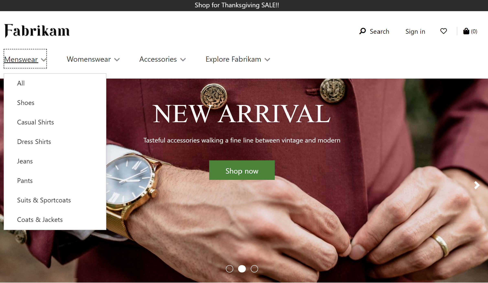

Navigationsmenümodul
Important
Dynamics 365 Retail ist jetzt Dynamics 365 Commerce und bietet umfassende Handelsfunktionen für alle Kanäle – von E-Commerce über Shops bis hin zu Callcentern. Weitere Informationen zu diesen Änderungen finden Sie unter Microsoft Dynamics 365 Commerce.
Dieses Thema enthält Navigationsmenümodule und es wird beschrieben, wie diese Siteseiten in Microsoft Dynamics 365 Commerce hinzugefügt werden.
Übersicht
Der Hauptzweck von Navigationsmenümodulen besteht darin, Website-Benutzern das Durchsuchen von Produkten und Website-Seiten gemäß der in Dynamics 365 Commerce-Zentralverwaltung definierten Kanalnavigationshierarchie zu ermöglichen . In einem Navigationsmenümodul konfigurierte Elemente werden als Website-Header-Navigation angezeigt. Navigationsmenümodule unterstützen auch statische Menüelemente, die auf andere Seiten einer E-Commerce-Wensite verweisen.
Das Navigationsmenümodul kann dem Header-Modul einer Seite hinzugefügt werden. Im Fabrikam-Design werden im Navigationsmenü standardmäßig zwei Ebenen angezeigt. Im Starter-Design werden im Navigationsmenü standardmäßig drei Ebenen angezeigt. Um die Anzahl der Ebenen zu ändern, ist eine Ansichtserweiterung für das Design erforderlich.
Die folgende Abbildung zeigt ein Beispiel für ein Navigationsmenü für die Fabrikam-Website mit zwei Ebenen der Kategoriehierarchie und einigen statischen Menüelementen. 
Eigenschaften des Navigationsmenümoduls
| Eigenschaftenname | Wert | Beschreibung |
|---|---|---|
| Grundlage | Retail, Manuelle Dokumenterstellung, Retail und manuelle Dokumenterstellung | Der Retail-Wert ermöglicht der Kanalnavigationshierarchie der Commerce-Zentralverwaltung im Navigationsmenü angezeigt zu werden. Der Wert Manuelle Dokumenterstellung ermöglicht das Kuratieren statische Menüelemente. Der Wert Retail und manuelle Dokumenterstellung ermöglicht eine Mischung aus beiden. |
| Kategoriebilder anzeigen | True oder False | Wenn diese Eigenschaft aktiviert ist, werden Kategoriebilder so im Navigationsmenü angezeigt, wie Sie in der Commerce-Zentralverwaltung für jede Kategorie definiert sind. Hinzugefügt in Commerce-Version 10.0.14. |
| Aktivieren Sie das mehrstufige Navigationsmenü | True oder False | Wenn diese Eigenschaft aktiviert ist, kann das Navigationsmenü mehrere Ebenen der Navigationshierarchie anzeigen. Diese Funktion ist nur in Dynamics 365 Commerce, Release 10.0.15 verfügbar. |
| Anzahl der Ebenen | Integer | Diese Eigenschaft definiert die Anzahl der Ebenen, die angezeigt werden sollen, wenn die Eigenschaft Aktivieren Sie das mehrstufige Navigationsmenü auf Wahr festgelegt ist. |
| Statisches Menüelement | Wertearray | Statische Menüelemente, die einen Menüelementnamen mit einem Link zu einer statischen Website-Seite verknüpfen. Sie können Menüelemente unter anderen Menüelementen erstellen. Standardmäßig werden statische Menüs auf der Stammebene angezeigt und an die Kanalnavigationshierarchie angehängt, falls diese vorhanden ist. |
| Stamm-Menü anzeigen | True oder False | Wenn diese Eigenschaft aktiviert ist, kann das Navigationsmenü unter einem benutzerdefinierten Stamm definiert werden (z. B. Jetzt einkaufen). Diese Funktion ist nur in Dynamics 365 Commerce, Release 10.0.15 verfügbar. |
| Stamm-Menü | Zeichenfolge | Diese Eigenschaft kann verwendet werden, um Text für einen benutzerdefinierten Stamm zu definieren, wenn die Stamm-Menü anzeigen Eigenschaft ist auf Wahr festgelegt ist. |
Die folgende Abbildung zeigt ein Beispiel für ein Kategoriebild, das im Navigationsmenü für die Fabrikam-Website angezeigt wird.

Hinzufügen eines Header-Moduls zu einem Navigationsmenümodul
Ausführliche Informationen zum Hinzufügen eines Navigationsmenümoduls zu einem Header-Modul finden Sie unter Header-Modul.